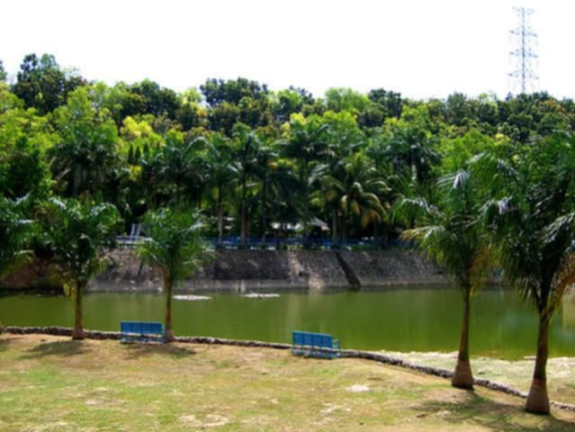
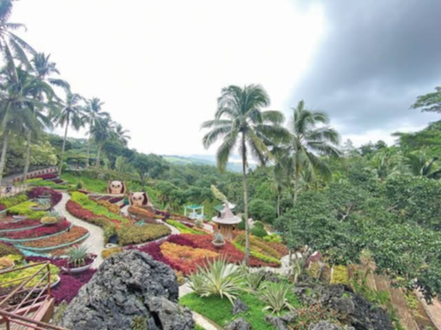
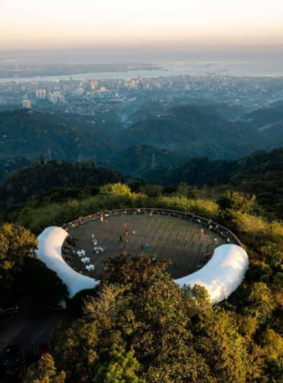
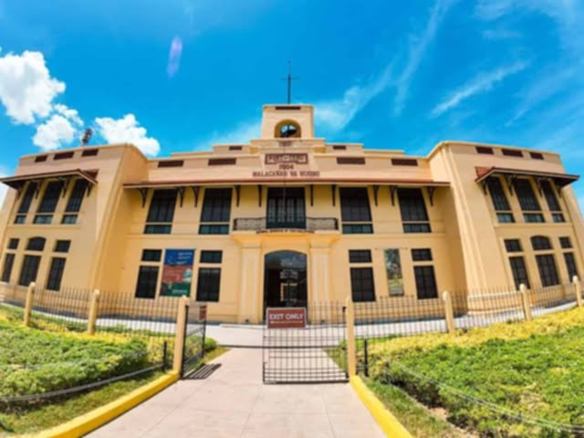
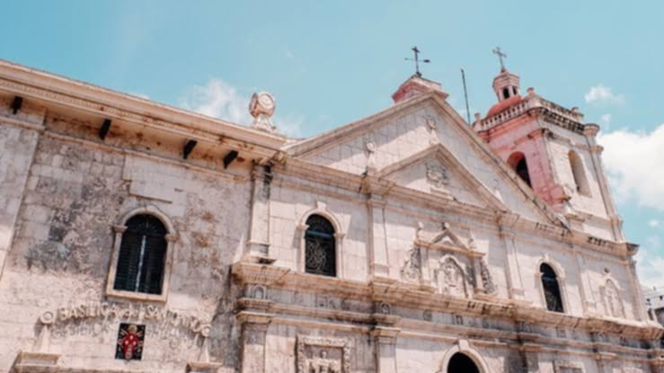
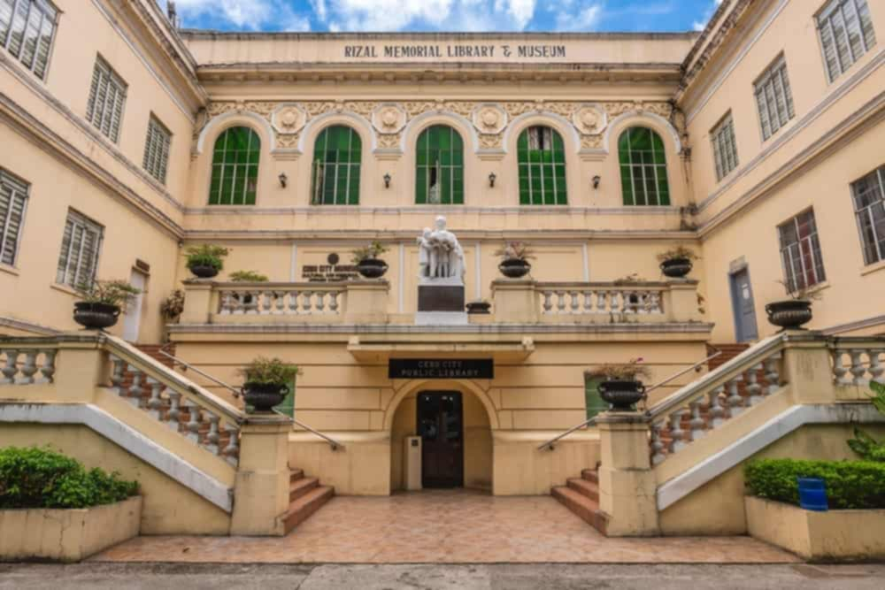
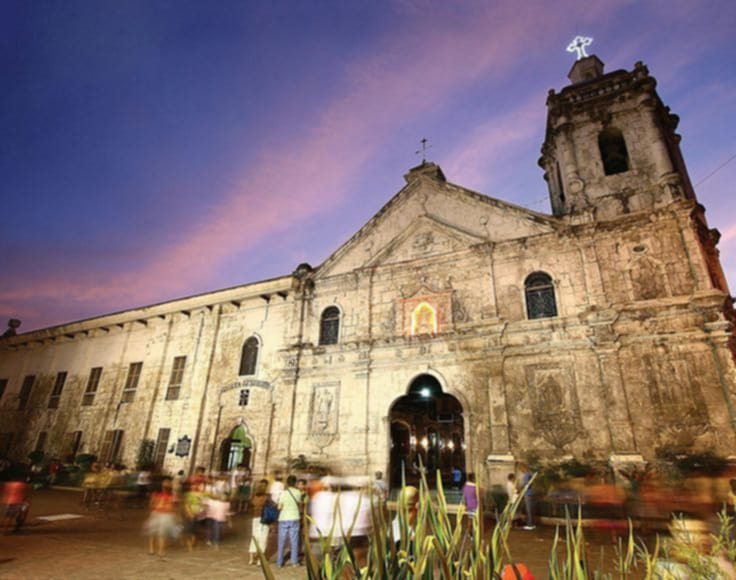
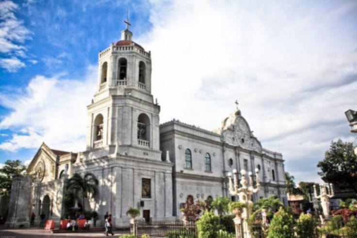
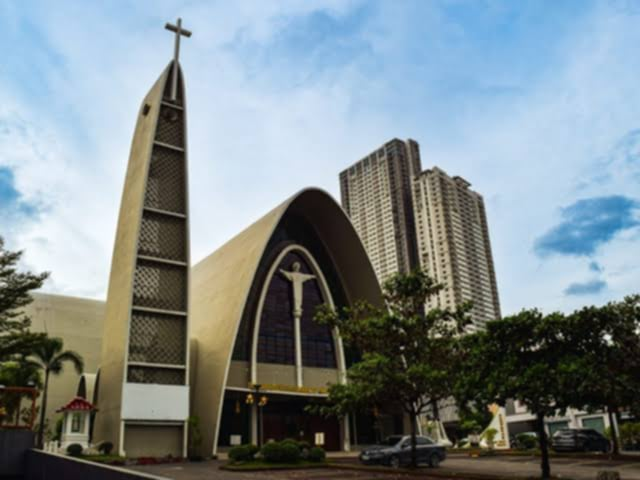

D' Family Park
D' Family Park is a 20-hectare nature and recreation park located in Nasipit, Talamban, Cebu City. Managed by the Metropolitan Cebu Water District (MCWD), it was inaugurated on May 8, 1999, with the aim of providing a wholesome, family-friendly environment while promoting environmental conservation through its diverse flora and fauna.
See More

Cebu Safari and Adventure Park
Cebu Safari and Adventure Park is the largest zoological park in the Philippines, spanning 170 hectares in the mountainous area of Barangay Corte, Carmen, Cebu. Established in 2018 by Michel J. Lhuillier, this premier safari destination houses over 1,000 animals representing approximately 120 species from around the globe.
See More

TOPS Cebu
Tops Lookout, commonly known as Tops Cebu, is a renowned hilltop destination situated in the Busay Hills of Cebu City. Perched approximately 600 meters above sea level, it offers panoramic vistas of Cebu City, Mandaue, Mactan Island, and even the distant Bohol coastline.
See More

National Museum of the Philippines - Cebu
Located in the historic Aduana Building in Cebu City, It showcases the region's rich cultural heritage and historical significance. Formerly known as Malacañang sa Sugbo when it served as the official residence of the Philippine president in the Visayas, this beautifully restored structure now serves as a cultural hub under the National Museum system.
See More

Basilica Minore del Santo Niño Museum
Located within the grounds of the oldest Roman Catholic church in the Philippines, the Basilica Minore del Santo Niño Museum in Cebu City offers a sacred and historical journey through the deep-rooted faith and religious traditions of the Cebuanos. The museum houses a remarkable collection of religious artifacts, vestments, old statues, and memorabilia related to the devotion to the Santo Niño.
See More

Rizal Memorial Library and Museum
The Rizal Memorial Library and Museum is a neoclassical landmark located in Cebu City, dedicated to preserving the region’s rich historical and cultural legacy. The museum features a collection of Cebuano artworks, historical photographs, cultural relics, and memorabilia that reflect the local identity and heritage.
See More

Basilica del Sto. Niño
Basilica del Sto. Niño is considered as the oldest Roman Catholic church in the Philippines. The Basílica Minore del Santo Niño de Cebú, alternatively known as the Minor Basilica of the Holy Child or simply Santo Niño Basilica, is a minor basilica in Cebu City in the Philippines that was founded in 1565 by Fray Andrés de Urdaneta and Fray Diego de Herrera.
See More

Cebu Metropolitan Cathedral
The Cebu Metropolitan Cathedral is significant for its historical role as the ecclesiastical seat of the Archdiocese of Cebu. It is a wide religious structure of Spanish colonial design. Built between the 17th and 20th centuries, it is among the most important emblems of Catholicism in the Philippines.
See More

Archdiocesan Shrine of the Most Sacred Heart of Jesus
Archdiocesan Shrine of the Sacred Heart of Jesus was established by Filipino-Chinese community in Cebu during the term of Julio Cardinal Rosales, D.D., in 1952. Sacred Heart of Jesus Church in Cebu is sculpted in the shape of massive curvilinear shells including the bell tower that stands in its gospel flank.
See More